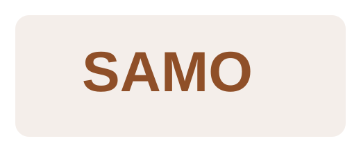
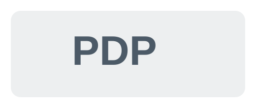

Box docciaSamo
Samo è il marchio da valorizzare nella fascia più elegante e riconoscibile dello showroom doccia. Serve a comunicare ordine, qualità percepita, linee pulite e una proposta bagno più forte dal punto di vista visivo.
Arredo bagno
La pagina arredo bagno è costruita per parlare in modo diretto a chi sta ristrutturando: meno confusione, più ispirazione, più showroom e una presentazione più chiara di box doccia, mobili, finiture e soluzioni coordinate.
Termoidraulica Lauri deve presentare questa sezione come un luogo di scelta guidata, non come una semplice raccolta di articoli. Mobili bagno, sanitari, rubinetteria, box doccia, piatti doccia, rivestimenti e finiture devono lavorare insieme per comunicare un’idea chiara: qui il cliente può costruire il proprio bagno con più sicurezza, più ordine e più supporto.
Lo showroom ha un ruolo centrale. È il punto in cui materiali, ambienti e soluzioni diventano visibili e confrontabili, e proprio per questo nel sito questa area deve risultare visivamente più forte, più completa e più calda.
Marchi in evidenza
Samo e PDP entrano come elementi visivi veri, non più come nomi anonimi. Questo rende la pagina più forte, più leggibile e più vicina al modo in cui il cliente riconosce davvero i marchi.

Box docciaSamo è il marchio da valorizzare nella fascia più elegante e riconoscibile dello showroom doccia. Serve a comunicare ordine, qualità percepita, linee pulite e una proposta bagno più forte dal punto di vista visivo.

Box docciaPDP completa l’offerta con una seconda presenza forte nella zona box doccia. Insieme a Samo aiuta a rendere la sezione più completa, più credibile e più commerciale.
Showroom
Questa fascia è stata scritta per essere già definitiva nel tono: visiva, commerciale e orientata alla scelta, non più una semplice sezione riempitiva.
 Showroom box doccia · Samo
Showroom box doccia · Samo
Samo entra come marchio da valorizzare nello showroom bagno con una proposta pulita, elegante e riconoscibile. La sua presenza deve trasmettere cura del dettaglio, qualità visiva e una gamma capace di adattarsi a bagni contemporanei, ristrutturazioni e composizioni più coordinate.
Showroom box doccia · PDP
PDP va raccontata come proposta complementare e concreta per ampliare gamma, stili e fasce di scelta. In questa pagina serve a comunicare varietà, disponibilità e capacità di costruire un’offerta doccia più completa e più adatta a esigenze diverse.
Ambiente bagno
 Ambiente coordinato
Ambiente coordinato
Questa immagine dà più corpo alla sezione arredo bagno e aiuta a capire subito il tipo di ambiente che il sito vuole trasmettere: consulenza, composizione, attenzione alle finiture e capacità di guidare davvero la scelta.
Mobili, lavabo e finiture
La pagina deve far percepire subito che venire in showroom significa vedere, confrontare e scegliere meglio. Questa fascia aiuta a trasformare il sito in invito concreto alla visita.
Cosa deve emergere
Il cliente deve sentire di non essere lasciato solo tra modelli, misure e finiture, ma accompagnato verso una composizione sensata e ben riuscita.
Lo showroom deve emergere come luogo di confronto e ispirazione, non solo come indirizzo o esposizione statica.
I brand devono aiutare la percezione di qualità e rendere il sito più forte, più autorevole e più attraente a colpo d’occhio.